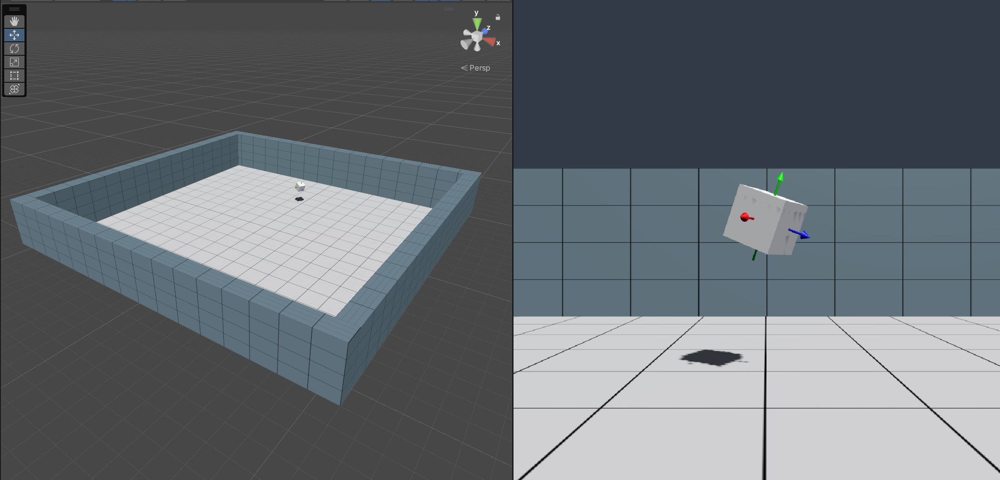

XRC Core
Overview
The XRC Core package is a utility package that serves as the foundation for other XRC packages. It provides XRC developers with a core set of tools to streamline the creation of applications, by simplifying the development process and accelerating iteration cycles.
Installation instructions
Package Manager
To install this package, follow these steps:
- In the Unity Editor, click on Window > Package Manager
- Click the + button and choose Add package from git URL option
- Paste this URL https://github.com/xrcollaboratory/edu.cornell.xrc.core.git in the prompt and click on Add
- If the package is private you might have to authenticate, if you have been granted access to this package
- The package should be installed into your project
- You can download Samples from under Samples in Package Manager
Requirements
This package has been tested using Unity Editor 2022.3.7f1 (LTS).
Dependencies: XR Interaction Toolkit, Input System.
Workflows
Currently, the primary use case for this package is to use the prefabs that are distributed via the package samples, see below.
Samples
XRC Starter Assets
This sample offers a range of materials, models, prefabs, scenes, and other assets that are not shipped with the runtime package scripts. These assets provide a starting point for building virtual environments, saving developers time and effort during the initial setup process.
PlayArea
This prefab can be used as a standardized scene environment across different projects. See sample scene for usage example.
PoseMarker
This prefab can be used to indicate a pose of an object by placing it as a child of the object. See sample scene for usage example.
